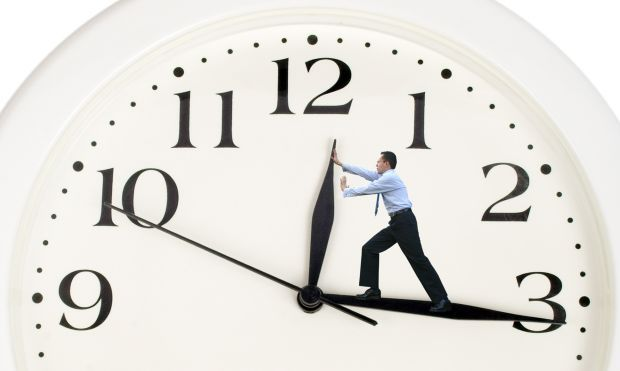

HOME
DICAS
VIDEOS
POSTS POR SEMANA
-1º Administre seu Tempo:Quatra-Freira Dia 18/09
Uma das coisas que mais passam rápido entre as nossas mãos é o tempo, que por maior possa parecer, sempre parece curto demais aos nossos olhos quando vemos alguns momentos passarem depressa.
Nesse sentido, muita gente considera extremamente importante nunca desperdiçar nem um segundo a mais de sua vida: Trabalhando o gerenciamento de seu tempo, seja no trabalho ou na vida pessoal, muitas pessoas conseguem aproveitar mais cada momento de suas rotinas e aprendem a administrar todo o tempo que existe em uma boa organização.
Pensando em administração de tempo, considerando que todos queremos desfrutar melhor de nossos momentos, aprenda algumas dicas sobre como gerenciar melhor a sua rotina e entenda como alguns tipos de planejamento podem fazer a diferença no seu dia a dia.
